Summary · Question 8 of 14
What reaches the national team?
The last stretch looks at what actually gets picked, and when the door to the biggest leagues opened and shut.
What is the national-team squad built from?
- Top-9 %
- Stepping %
- Domestic %
- Other %
-
 Erling Haaland
Erling Haaland
-
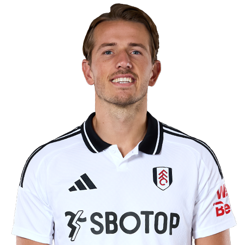
Sander Berge -
 Leo Østigård
Leo Østigård
-
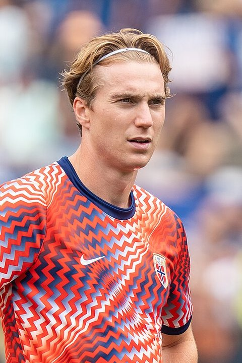
Kristian Thorstvedt -
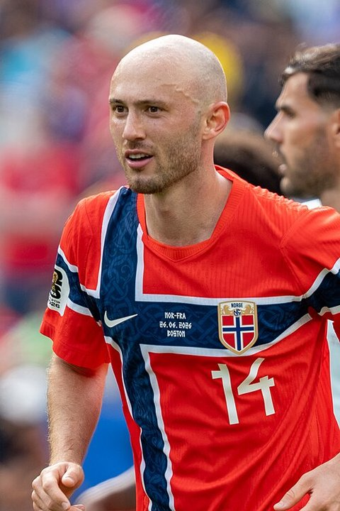
Fredrik Aursnes -
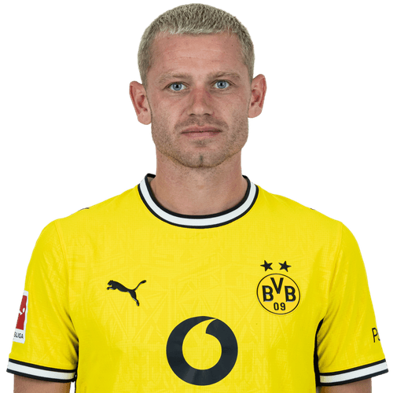
Julian Ryerson -
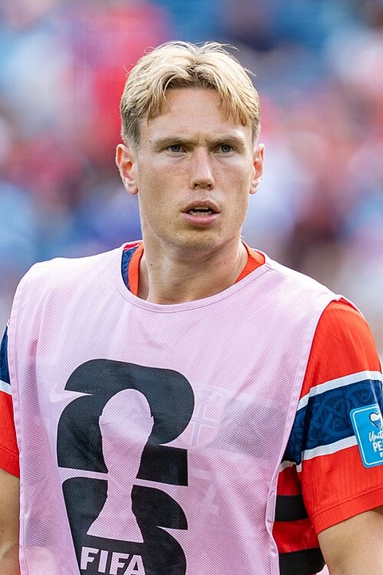
Torbjørn Heggem -
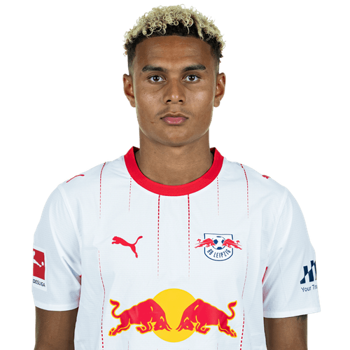
Antonio Nusa -
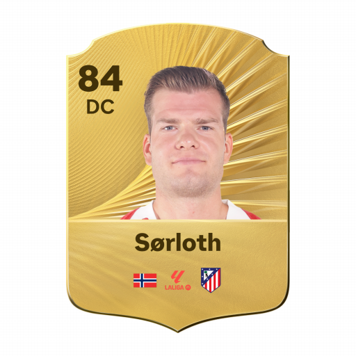
Alexander Sørloth - Kristoffer Ajer
-
 Andreas Schjelderup
Andreas Schjelderup
- Jørgen Strand Larsen
-
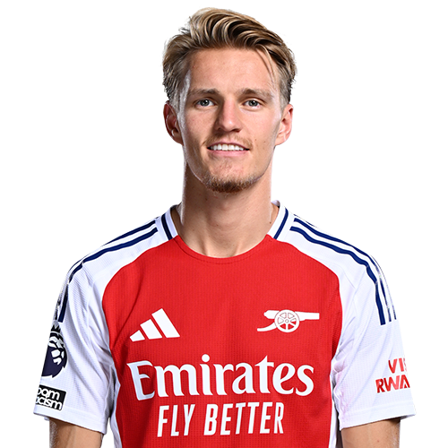
Martin Ødegaard -
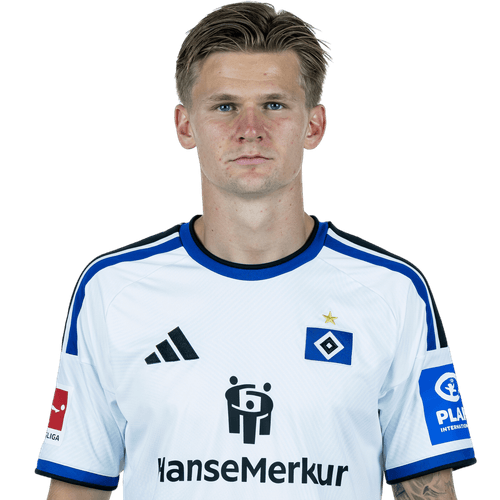
David Møller Wolfe -
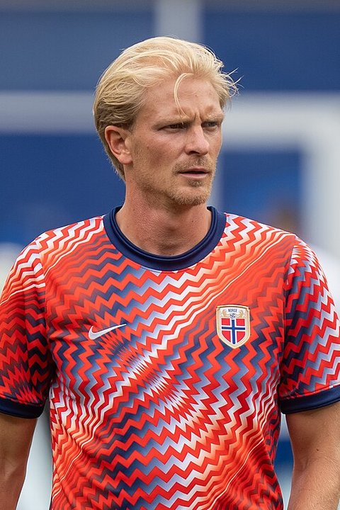
Morten Thorsby -
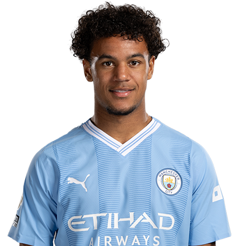
Oscar Bobb -
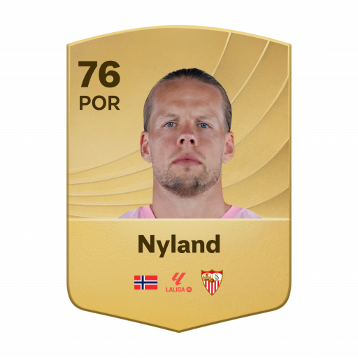
Ørjan Nyland -
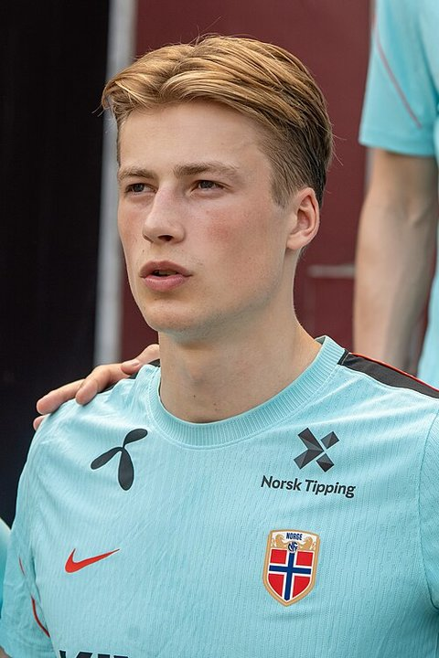
Sander Tangvik -
 Henrik Falchener
Henrik Falchener
-
 Fredrik André Bjørkan
Fredrik André Bjørkan
-
 Patrick Berg
Patrick Berg
-
 Jens Petter Hauge
Jens Petter Hauge
- Egil Selvik
- Marcus Holmgren Pedersen
-
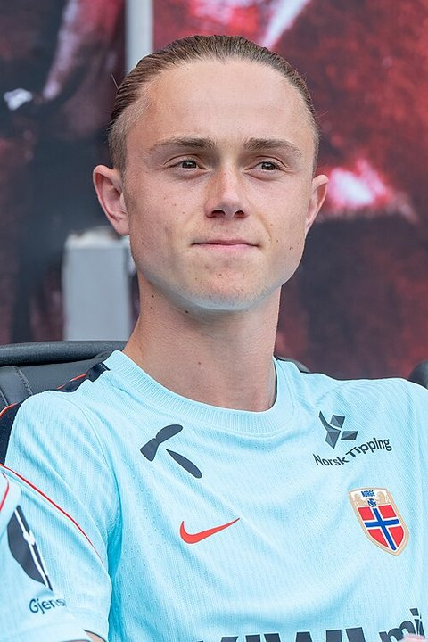
Thelo Aasgaard -
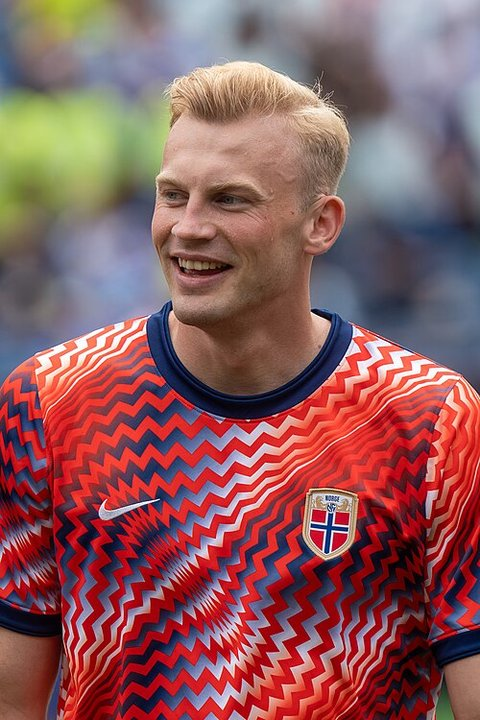
Sondre Langås